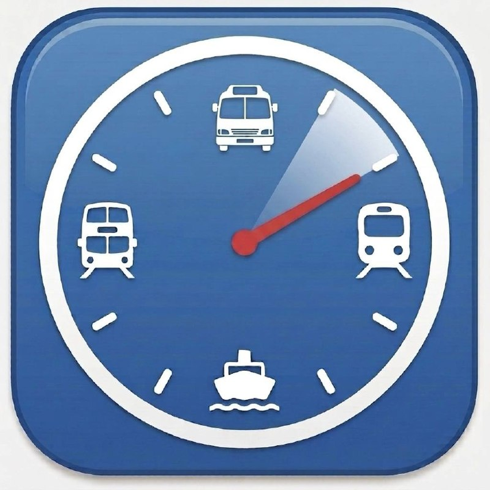

支援 · Support · 支持
「路線App」是一款提供香港公共交通實時資訊的iOS應用程式，支援九巴、城巴、港鐵及渡輪的即時到站時間查詢。
A: 請嘗試輸入路線號碼（如「87D」）或起訖站名稱進行搜尋。如果仍然找不到，可能是該路線暫時不在資料庫中。
A: 當預計到站時間超過120分鐘，或未有實時數據時，會顯示為「班次」。
A: 收藏資料僅儲存在您的裝置本地，不會同步至雲端。解除安裝應用程式後資料將被清除。
A: 部分路線的回程數據可能未由公共交通機構提供。我們只會顯示有數據的方向。
A: 本應用程式需要 iOS 16.0 或以上版本。
如需進一步協助，請聯絡我們：
cyrus903@users.noreply.github.com「路线App」是一款提供香港公共交通实时信息的iOS应用程序，支援九巴、城巴、港铁及渡轮的实时到站时间查询。
A: 请尝试输入路线号码（如「87D」）或起讫站名称进行搜索。如果仍然找不到，可能是该路线暂时不在数据库中。
A: 当预计到站时间超过120分钟，或没有实时数据时，会显示为「班次」。
A: 收藏数据仅存储在您的设备本地，不会同步至云端。卸载应用程序后数据将被清除。
A: 部分路线的回程数据可能未由公共交通机构提供。我们只会显示有数据的方向。
A: 本应用程序需要 iOS 16.0 或以上版本。
如需进一步协助，请联系我们：
cyrus903@users.noreply.github.com"HKTranApp" is an iOS application that provides real-time public transport information for Hong Kong, supporting KMB, Citybus, MTR, and Ferry arrival time queries.
A: Try searching by route number (e.g., "87D") or origin/destination name. If it still cannot be found, the route may not be in our database yet.
A: When the estimated arrival time exceeds 120 minutes or no real-time data is available, it will display as "Scheduled".
A: Saved data is stored locally on your device only and does not sync to the cloud. Uninstalling the app will remove all data.
A: Return direction data may not be provided by the transport operator for certain routes. We only display directions that have available data.
A: This application requires iOS 16.0 or later.
For further assistance, please contact us:
cyrus903@users.noreply.github.com